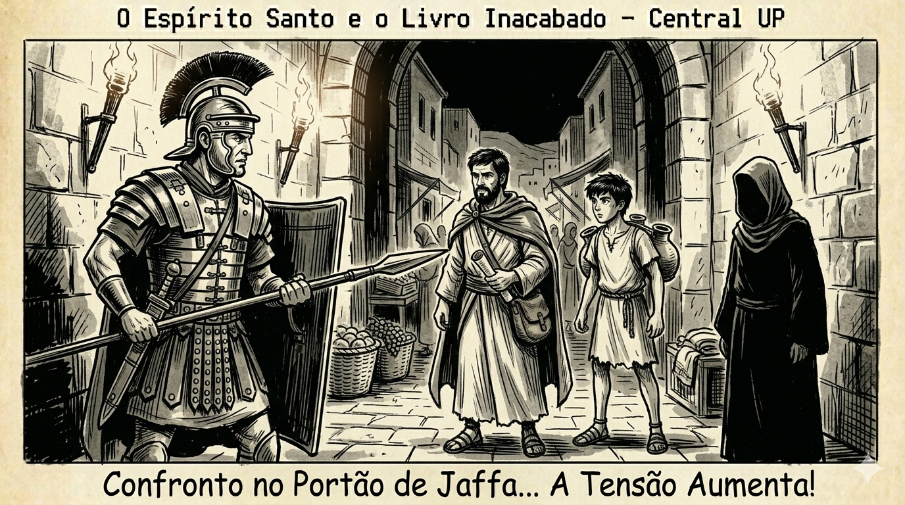

Chegando no portão...
Chegando no portão...
O ar da noite estava gelado, mas o suor no meu rosto era de tensão.
O Médico e o jovem Levi encontraram Pedro escondido na casa de Maria. Enquanto os soldados faziam buscas na vizinhança, o Médico cuidou dos ferimentos de Pedro. Levi bolou um plano arriscado: usar a influência do Médico para passar pelos guardas e tirar Pedro de Jerusalém.
Chegamos perto do Portão de Jafa. O barulho das botas dos soldados romanos batendo no chão de pedra parecia marteladas no meu peito. Pedro caminhava entre eu e João Marcos, com o capuz da túnica cobrindo bem os olhos. Levi ia uns metros na frente, fingindo ser apenas um carregador d'água voltando para casa.
Meu coração batia tão forte que parecia que ia pular fora. Eu sentia o rolo de papiro escondido na minha manga. Eram minhas notas, o começo de uma história que eu sentia que mudaria o mundo.
De repente, Levi parou. Um centurião romano bloqueou nosso caminho com uma lança.

O Centurião olha bem para vocês. "Identifiquem-se! O que fazem na rua a essa hora da noite?"
Conseguimos!
Passamos pelos romanos sem levantar suspeitas. Agora o caminho está livre na escuridão fora dos muros.
Depois de alguns segundos de puro silêncio, o portão pesado abriu com um rangido. As sombras nos engoliram assim que saímos de Jerusalém. Estávamos livres, mas Pedro continuava em silêncio.
Eu olhei. Jerusalém brilhava lá longe sob as estrelas. Percebi que Pedro tinha razão. Eu não estava fugindo de nada. Eu estava sendo enviado para algo maior. Minhas notas no papiro ainda eram poucas, mas eu sentia que a tinta dessa história ainda estava fresca.
Central UP — IEQ Central Londrina
Desenvolvido por Pr. Eduardo